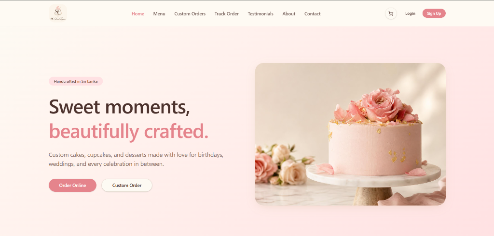
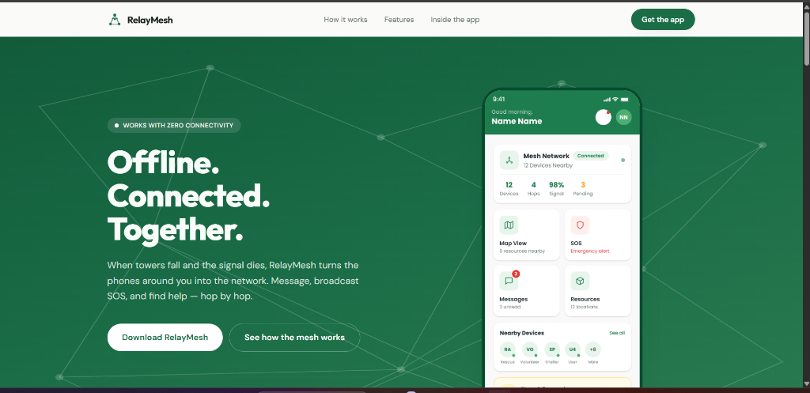
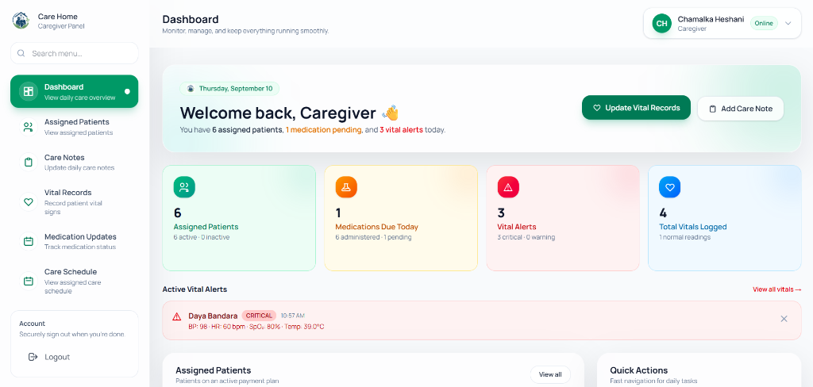
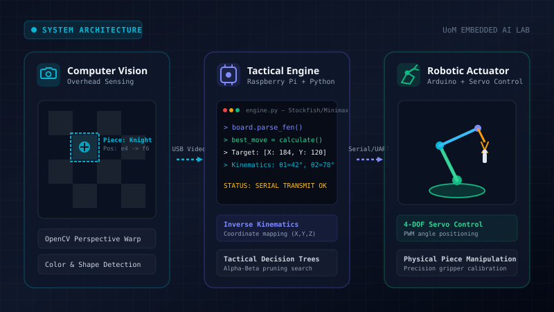

Hi, I am
Chamalka Heshani
“I build scalable web applications and explore cloud-based systems and AI-driven solutions.”
Information Technology undergraduate at the University of Moratuwa. Experienced in full-stack web platforms, mobile mesh networking, and cloud architectures using React, TypeScript, NestJS, Go, and PostgreSQL.
About Me
Who I Am & What I Do
I am a 3rd-year Information Technology undergraduate at the University of Moratuwa with a focus on Software Engineering and building scalable, reliable applications.
Skilled in problem solving, full-stack web engineering, and system design using TypeScript, Python, Go, and SQL databases. I enjoy architecting clean solutions from responsive frontends to resilient APIs and distributed mesh networks.
Education
BSc (Hons) in Information Technology — CGPA 3.36
University of Moratuwa • Coursework: Object-Oriented Programming, Data Structures & Algorithms, Database Management Systems, Web Development, and Machine Learning.
G.C.E. Advanced Level (A/L) — ABB
St. Thomas’ Girls’ High School • Chemistry (A), Physics (B), Combined Mathematics (B).
What I Do
Web Development
Building end-to-end, responsive web applications and full-stack e-commerce platforms with clean component architecture and scalable backend APIs.
- Interactive single-page applications using React & TypeScript
- Modular RESTful APIs engineered with NestJS, Node.js & Express
- Accessible, modern responsive interfaces with Tailwind CSS
Mobile & Distributed Systems
Engineering resilient cross-platform mobile applications and decentralized peer-to-peer communication systems for mission-critical scenarios.
- Mobile development with React Native, WatermelonDB & SQLite
- Device-to-device mesh networks via BLE & Wi-Fi Direct
- High-throughput Go backends and compact Protocol Buffers
Cloud Deployment
Containerizing microservices, setting up automated CI/CD deployment pipelines, and managing cloud environments on AWS and Vercel.
- Multi-stage Docker builds & Kubernetes cluster fundamentals
- Automated testing & deployment with GitHub Actions
- AWS Cloud Practitioner Essentials, Vercel & Linux systems
Database & System Design
Designing normalized relational schemas, spatial databases, and secure data access layers with strict Role-Based Access Control.
- Relational schema design with PostgreSQL, PostGIS & MySQL
- Type-safe ORM migrations using TypeORM & Prisma
- Local offline synchronization with SQLite & WatermelonDB
Technical Interests & Focus Areas
Passionate about building modern software systems across the full technology lifecycle.
Technical Skills
Python
Data processing, machine learning models, computer vision pipelines, and embedded hardware automation.
JavaScript & TypeScript
Modern ES6+ syntax, asynchronous programming, strong typing, interfaces, and modular web/mobile codebases.
Go (Golang)
Concurrent backend services, decentralized mesh systems, efficient data serialization, and high-throughput routing.
Java, C & C++
Object-Oriented Programming (OOP), Data Structures & Algorithms, and low-level embedded systems actuation.
React & Tailwind CSS
Custom hooks, state management, reusable design tokens, e-commerce storefronts, and accessible responsive UI design.
React Native & Mobile
Cross-platform mobile apps, offline-first local persistence, BLE mesh networking, and Mapbox geospatial visualization.
NestJS, Node.js & Express
Scalable backend architectures, RESTful API endpoints, dependency injection, auth guards, and middleware implementation.
PostgreSQL, PostGIS & MySQL
Relational data modeling, spatial indexing with PostGIS, TypeORM and Prisma ORM migrations, and Role-Based Access Control (RBAC).
MongoDB & Offline Stores
Document databases with MongoDB, lightweight embedded persistence with SQLite, and reactive offline-first sync with WatermelonDB.
Docker, Kubernetes & AWS
Multi-stage containerization, Kubernetes cluster orchestration, AWS Cloud Practitioner Essentials, and Vercel deployments.
Linux & GitHub Actions
Unix shell navigation, Bash automation scripts, automated test and lint pipelines, and CI/CD workflow automation.
Networking Fundamentals
Understanding of network protocols and diagnostic workflows for reliable distributed and client-server systems.
TensorFlow, Keras & OpenCV
Supervised & unsupervised model training, deep neural networks, computer vision, and real-time chessboard detection.
Tools & Agile Practices
Endpoint verification with Postman, Firebase integration, UI/UX design with Figma, and Git branch workflows.
Featured Projects

SC-Frost Heaven
Full-stack bakery and custom cake e-commerce platform ("Sweet moments, beautifully crafted") engineered for an artisan cake business in Sri Lanka. Features dynamic celebration menus, custom cake order pipeline, live order tracking, customer testimonials, and an administrative order management system.

RelayMesh
Decentralized emergency mobile communication system ("Offline. Connected. Together.") built to function with zero cellular or internet connectivity. Uses Bluetooth Low Energy (BLE) and Wi-Fi Direct to turn nearby phones into a mesh network for emergency SOS broadcasts, hop-by-hop messaging, and location resource mapping.

Elderly Care Home Records Management System
Modernized residential care home platform ("Stay Comfortable Like Your Home") engineered to streamline day-to-day operations and clinical care. Features a comprehensive Caregiver Dashboard to track assigned patients, document daily care notes, record patient vitals with real-time critical alerts (BP, HR, SpO2, Temp), track medication updates, and manage care schedules.

Autonomous Chess Playing Robot
Vision-guided robotic chess system combining OpenCV board state detection, real-time tactical move calculation, and robotic piece manipulation using Raspberry Pi and Arduino.
Achievements & Leadership
Finalists – Project Nova
Finalists in ProjectNova, a dynamic tech-based initiative organized by AIESEC in USJP, competing as a core member of Team Nexio.
IEEE Student Branch
Active committee leadership contributing as Logistic Committee Member for Mercon and Marketing Committee Member for Hackelite.
Batch Representative
Serving as the elected representative for the Information Technology undergraduate batch, liaising between faculty administration and students.
Certifications
AWS Cloud Practitioner Essentials
AWS Professional Foundation
Cloud infrastructure fundamentals, AWS compute & storage architectures, security principles, identity & access management, and pricing models.
Supervised Machine Learning
Regression and Classification Specialization
Linear regression, logistic regression, gradient descent algorithms, model evaluation, and regularized cost functions.
Unsupervised Learning & Recommenders
Machine Learning Specialization
Clustering (K-means), anomaly detection, collaborative filtering, content-based recommendation systems, and reinforcement learning.
Advanced Learning Algorithms
Machine Learning Specialization
Multi-layer perceptrons, neural network architectures, decision trees, random forests, and gradient boosted trees.
Introduction to Software Engineering
IBM Professional Foundation
Software Development Life Cycle (SDLC), Agile methodologies, architectural patterns, Scrum principles, and code reviews.
Let’s build something together.
Let's Connect
I am actively seeking Software Engineering Internship opportunities. Feel free to reach out directly through email, phone, or LinkedIn.